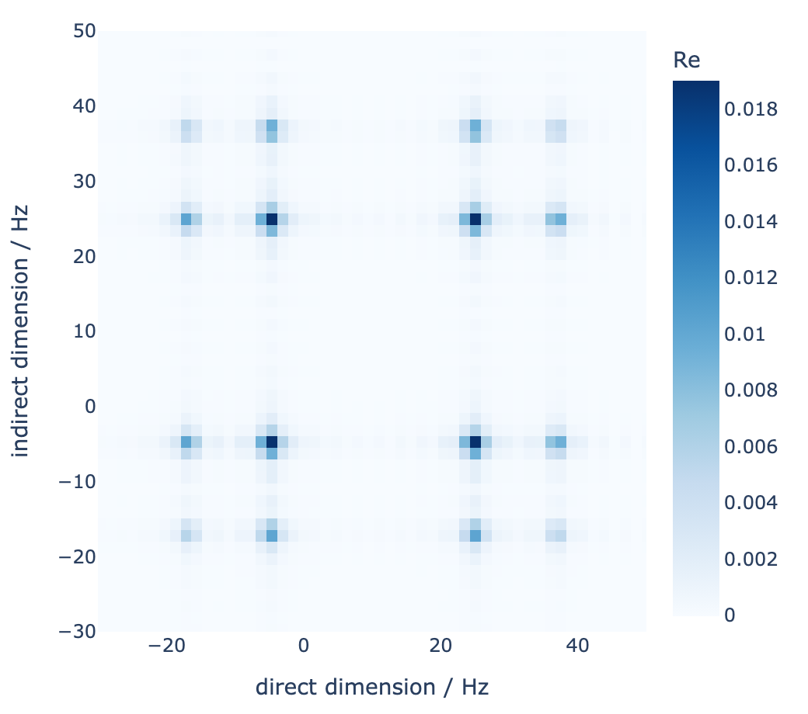
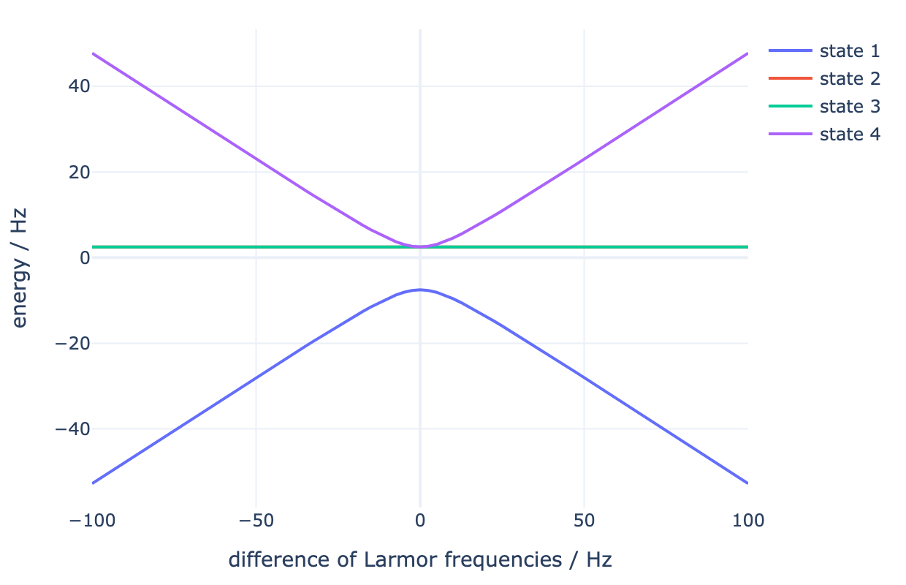
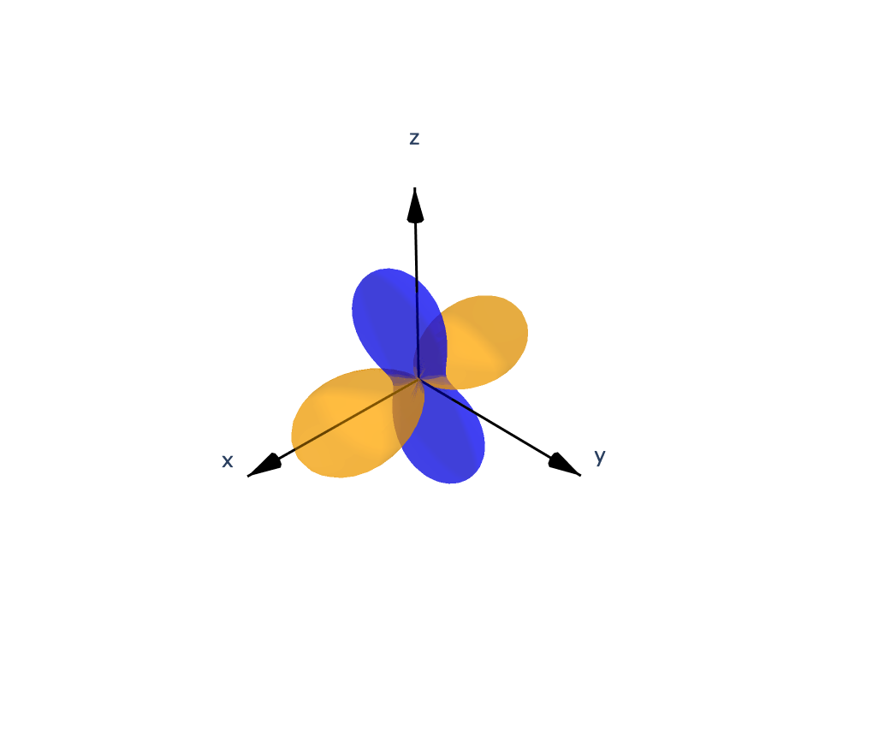

spyndynamica ports SpinDynamica 3.10.2, the Mathematica package for spin dynamics by Malcolm Levitt and co-workers: spin operators as sums of product and spherical tensor operators with symbolic coefficients, and a numeric engine for sequences of pulses and delays. The results are compared with SpinDynamica's own output, and each has a check that does not depend on it.
Install: pip install spyndynamica (PyPI). No install needed: run an example in the browser, or open the Colab notebook.
spyndynamica lives in the same repository as Spynach and EasySpyn and uses none of their code: it needs NumPy, SciPy and SymPy, is installed on its own, and has its own version number. Symbolic results are SymPy expressions, so they simplify, substitute, differentiate and print as LaTeX like any other; numeric results are NumPy arrays.
The port was written by reading SpinDynamica 3.10.2, following its conventions and comparing with what it computes. No SpinDynamica source code is part of it, and only what the release contains was ported, not the add-on packages distributed beside it. SpinDynamica names no formal licence; its terms of use say it is open-source and freely available for use, and that notice is kept in LICENSE.



The order in which SpinDynamica lists the shift-and-z operator basis within one coherence order for spins above 1/2 (the port has the same operators per coherence order, in its own order), the options that only steer SpinDynamica's internals, and the add-on packages. The guide Coming from SpinDynamica keeps the list current.
I(1, "x") for I1x), and signs, phases, rotation and Euler-angle conventions are SpinDynamica's.signal_1d for Signal1D, options as keyword arguments, products of operators on different spins with @. The table of names is in the comparison guide.After pip install spyndynamica: a 90° pulse on the first spin, then free evolution under the chemical shift and the coupling, and the amplitude of the antiphase term.
import sympy as sp
from spyndynamica import SpinSystem
s = SpinSystem(2)
I = s.I
Omega, J, t = sp.symbols("Omega J t", real=True)
H = Omega * I(1, "z") + 2 * sp.pi * J * (I(1, "z") @ I(2, "z"))
rho = I(1, "z").rotate(sp.pi / 2, "x", spins=[1]).evolve(H, t)
print(rho)
print(rho.amplitude(2 * I(1, "x") @ I(2, "z"))) # sin(pi*J*t)*cos(Omega*t)In the browser playground the symbolic examples run cell by cell with typeset results: product operators through COSY, the singlet-triplet basis, dipolar relaxation from double commutators, an amplitude against a flip angle, bounds on a transfer and the average Hamiltonian of WAHUHA. Three numeric ones have a form of parameters: INEPT, an AB spectrum and chemical exchange.
Reference data are written by SpinDynamica itself: case files run headless under wolframscript and save each result, 976 cases in twenty files, and the tests rebuild every case and compare. Symbolic results are compared as expressions, numeric ones to the precision of the calculation.
SpinDynamica is the reference, not the truth: every foundation result also has a check that does not depend on it, such as a commutation relation, a closed form or a sum rule. That is how the divergences were found. The fixtures and their generator are described in tests/spyndynamica/fixtures.
SpinDynamica is programmed mainly by Malcolm Levitt. Its programmers page names additional code and assistance by Jyrki Rantaharju (speed enhancements), Andreas Brinkmann (parallelization and powder averaging) and Soumya Singha Roy (isotope data); Christian Bengs contributed code to the 3.0 release, is co-author of the publication and administers the site. The site also lists add-ons with their authors, among them AdiabaticTools and the S(n)/SO(3) dual pairing by Christian Bengs; release 3.10.2 has adiabatic events and a dual pairing function, and the port of those is credited to him as well. The source files name no authors, so beyond this the port credits SpinDynamica as a whole and not function by function. Corrections and missing names are welcome as issues on GitHub.
Work that uses SpynDynamica should cite, as SpinDynamica's terms of use ask: C. Bengs, M. H. Levitt, SpinDynamica: Symbolic and numerical magnetic resonance in a Mathematica environment, Magn. Reson. Chem. (2017), doi:10.1002/mrc.4642. The terms also ask that the authors of any add-on used be credited.